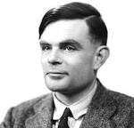
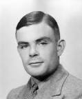

Biografia de Alan Turing
Alan Mathison Turing nació el 23 de junio de 1912 en el barrio de Paddington, Londres. Su familia era de clase media alta. Fue el segundo hijo de Julius y Sara, que permanecieron en la India durante varios años, por lo que pasó la infancia con su hermano mayor John.
En 1928, en la escuela Sherborne conoció a su amigo Christopher Morcom, quien fallecería dos años después. Por este motivo es que Turing se interesa por el estudio de la mente humana a través de la física y la mecánica cuántica, buscando la solución a la relación entre mente y materia. Al año siguiente en Cambridge, en el King's College, encontró un método de estudio que permitía ideas más abiertas y allí consiguió distinguirse en lógica y matemática. En 1936 le otorgaron un premio por sus investigaciones en la teoría de la probabilidad.
A los 26 años Turing comenzó a trabajar para el servicio oficial británico de cifrado. Obtuvo el doctorado por la Universidad de Princeton, especializándose en criptología. En 1936, imaginaba una computadora que resolviera cualquier problema traducido a expresiones matemáticas y luego reducido a una cadena de operaciones lógicas con números binarios, en las que sólo cabían dos decisiones: verdadero o falso. Se trataba de reducir cifras, letras, imágenes, sonidos a unos y ceros y usar un programa para resolver los problemas en pasos muy simples.
En 1950 Turing inició su artículo Computing machinery and intelligence formulando la siguiente pregunta: ¿las máquinas pueden pensar?. Fue el primer científico en cuestionarse esto, aunque no acuñó el término que hoy conocemos como inteligencia artificial. La Inteligencia Artificial es la disciplina científica y tecnológica cuyo objetivo es crear procesos de la mente y su conexión con el cuerpo a través de la metáfora computacional. La metáfora computacional es un concepto utilizado por la psicología cognitiva. Dicha disciplina sostiene que el cerebro posee un sistema de procesos de datos, similar al de una computadora digital. A su vez, el concepto es utilizado en el estudio de la neurociencia y también en la neurofilosofía (filosofía de la mente). Mediante el test de Turing se medía la capacidad de una máquina para hacerse pasar por ser humano mediante una prueba de conversación entre ambos. Si el humano no logra identificar que se trata de una máquina, esta última sería considerada inteligente. Turing contribuyó además a la biología matemática. Publicó un artículo en 1952 que derivó en un campo de investigación matemática basada en la formación de patrones, utilizada en la actualidad.
